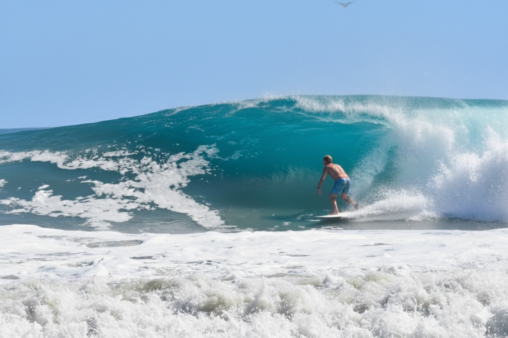
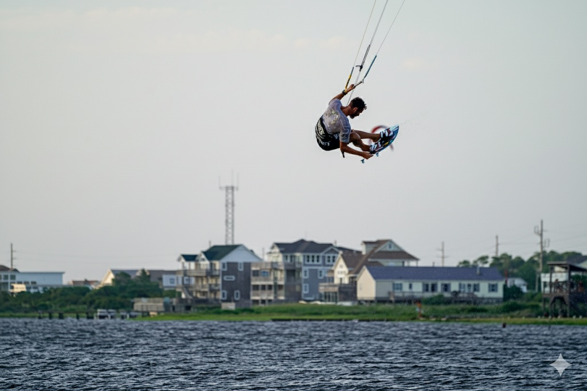
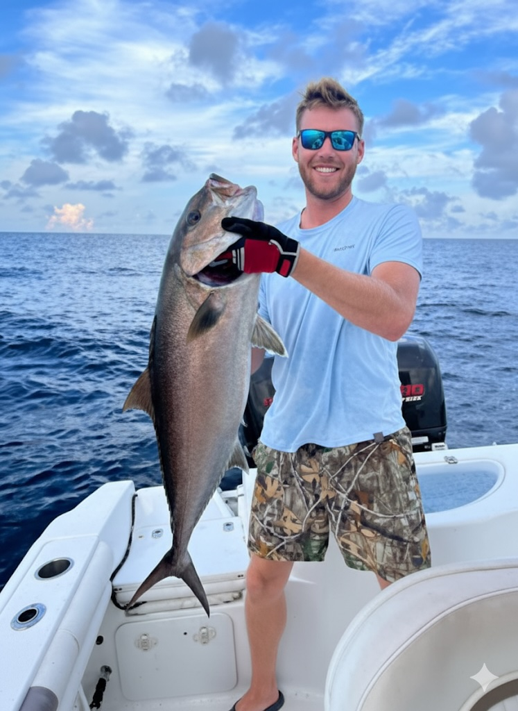
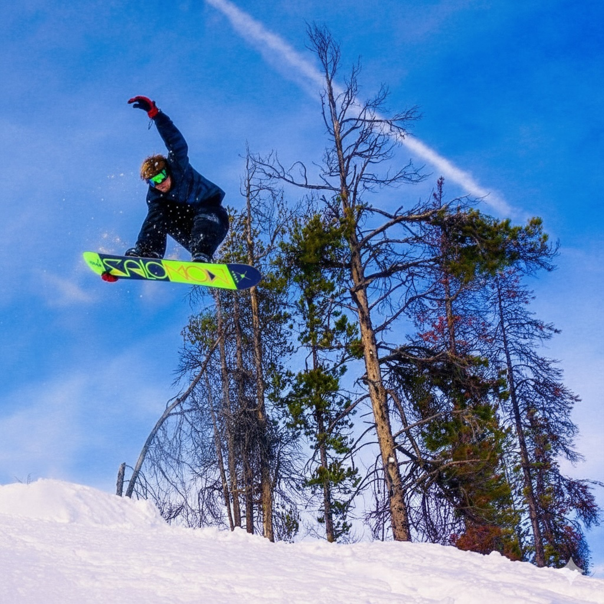

Hi, my name is
[cite_start]Deaton Wright. [cite: 61]
I turn transactional users into highly engaged community members. [cite_start]As a Strategy & Operations leader with 10+ years of experience in high-velocity marketplaces, I specialize in the "0-to-1" transition from transactional volume to sustained, high-LTV engagement. [cite: 66]
About Me
[cite_start]I turn transactional users into highly engaged community members. [cite: 66] My career has been defined by one core mission: building efficient systems that empower teams to deliver exceptional results.
I don't just analyze the P&L; [cite_start]I build the SQL/Python infrastructure to diagnose unit economics, incubate retention pilots like Bird+, and scale the teams required to execute them. [cite: 67]
[cite_start]From architecting subscription models at Bird to building global loyalty ecosystems at Real, I've driven significant impact on retention, LTV, and profitability. [cite: 68]
Technical Toolkit
Monetization & Growth [cite: 70]
Technical Analytics [cite: 73]
Operational Mechanics [cite: 75]
Where I've Worked
Sr. [cite_start]Manager, Rider Growth [cite: 79]
[cite_start]Bird [cite: 78]
-
[cite_start]
- Designed and managed end-to-end A/B testing roadmaps for multi-channel lifecycle campaigns, driving a 22% increase in active rider engagement and retention. [cite: 81] [cite_start]
- Launched data-driven outreach initiatives designed to educate users and build trust. [cite: 82] [cite_start]These campaigns increased rider frequency and drove a 30% lift in targeted market activation. [cite: 83] [cite_start]
- Set up robust tracking mechanisms, integrating Tableau dashboards with CRM tools (Airtable/Salesforce/Braze) to monitor real-time campaign effectiveness. [cite: 84] [cite_start]
- Incubated and launched the regional Bird+ subscription service to combat churn among power users, exceeding launch revenue targets by 57%. [cite: 88, 89]
Operations - Vice President [cite: 105]
[cite_start]WB Surf Inc. [cite: 104]
-
[cite_start]
- Shifted the strategy from "Volume" to "Value." [cite: 107] [cite_start]Institutionalized a SQL-based segmentation framework that identified high-LTV cohorts, increasing high-value new users by 80%. [cite: 108] [cite_start]
- Steered a distressed unit to profitability by deploying an algorithmic pricing strategy that drove a 180% revenue increase in core product lines. [cite: 109] [cite_start]
- Scaled fulfillment capacity by 3x and reduced Cost of Goods Sold (COGS) by 18% through strategic supplier consolidation and JIT inventory. [cite: 112, 113] [cite_start]
- Stabilized workforce volatility (45% to 15% churn reduction) by designing a data-driven incentive structure. [cite: 114]
General Manager [cite: 116]
[cite_start]Real [cite: 115]
-
[cite_start]
- Unified fragmented business units into a single "Member View," designing a cross-sell strategy that increased repeat visit rates by 30%. [cite: 118] [cite_start]
- Revolutionized the customer service delivery model by implementing a tiered support structure. [cite: 119] [cite_start]This drove a 70% improvement in CSAT and reduced churn by 50%. [cite: 120] [cite_start]
- Architected the "Launch-in-a-Box" framework for international expansion, creating a scalable operating system to deploy into 42 markets. [cite: 121] [cite_start]
- Maintained gross margins above 65% during rapid scale by architecting a centralized procurement engine. [cite: 128]
Beyond the Office

Surfing
Chasing waves & balance.
Hiking
Exploring new trails.

Kiteboarding
Harnessing the wind.
Camping
Nights under stars.

Fishing
Patience & Strategy.

Snowboarding
Carving mountains.
Education [cite: 129]
[cite_start]University of North Carolina, Wilmington [cite: 130]
[cite_start]BS - Business Analytics, Management and Leadership [cite: 131]
What's Next?
Get In Touch
I'm currently looking for new opportunities to drive operational excellence. Whether you have a question about my experience or just want to say hi, I'll try my best to get back to you!
(910) 585-2547 [cite: 64]
Say Hello